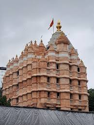
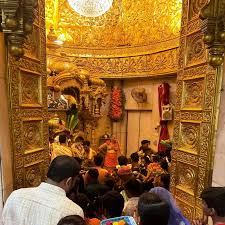
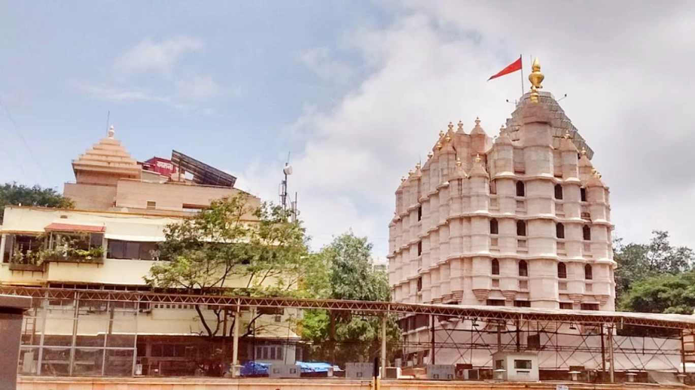
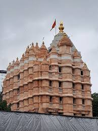
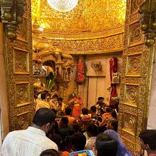
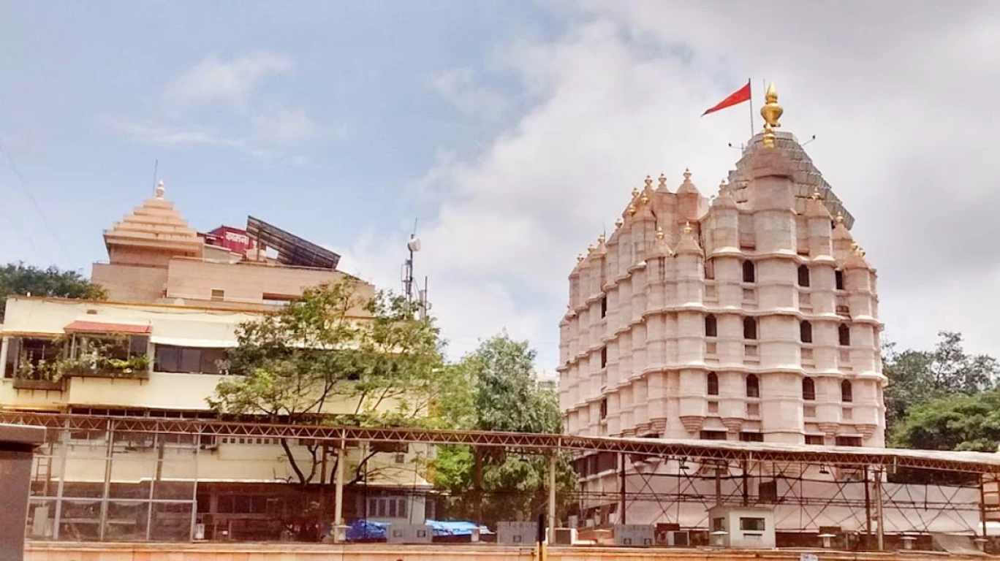

Siddhivinayak Temple
 





🛕 Introduction
The Shree Siddhivinayak Ganapati Mandir is a famous Hindu temple dedicated to Lord Ganesha, located in Prabhadevi, Mumbai. It is one of the richest and most visited temples in India.
📜 History
Built in 1801, the temple started as a small structure and was later expanded due to its growing popularity. It has become a major spiritual and cultural landmark for Mumbaikars and tourists alike.
🕒 Best Time to Visit
- Tuesday mornings (devotees' day)
- During Ganesh Chaturthi festival
- Weekdays for shorter queues
🙏 Things to Do
- Seek blessings from Lord Ganesha
- Observe traditional rituals and aartis
- Buy prasad and spiritual souvenirs
- Admire the architecture and gold dome